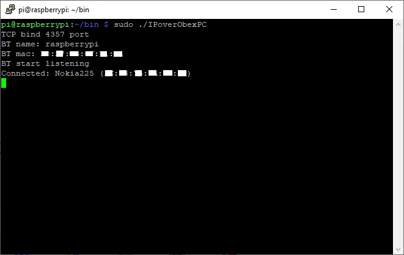
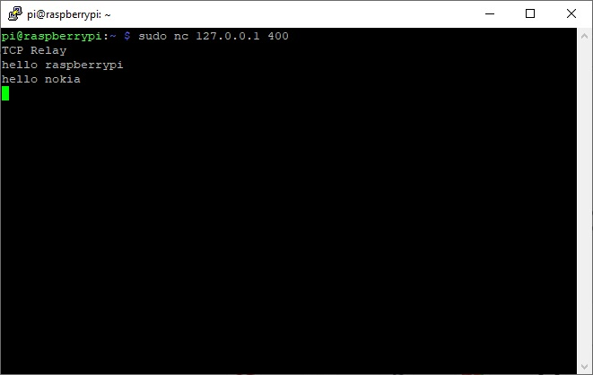

Client app to connect by bluetooth to server app for MRE platform mobile phone (including Nokia S30+) For using with Nokia mobile phone, app must be signed with IMSI (your SIM card) code. https://vxpatch.luxferre.top "IPoverObexTest.vxp" "IPoverObexPC". [32 bit binary for Raspberry Pi Zero W Debian Bookworm (12)].



